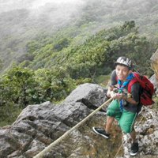

La Tropa
Es la rama que prosigue a la Manada y comienza a los 11 años aproximadamente y se extiende hasta los 16.
En la tropa hay Patrullas, cada patrulla está conformada por un grupo de 5 a 9 niños y jovencitos o niñas y jovencitas (las patrullas debe ser masculinas o femeninas).
El liderazgo dentro de la patrulla lo ejerce uno de sus propios miembros (Guía de Patrulla), electo por todos los demás. Para identificarse adoptan el nombre de un animal.
La tropa fue la primera sección de la que partió todo el movimiento scout.
El marco simbólico que proponemos a los jóvenes (explorar nuevos territorios con un grupo de amigos) guarda una estrecha correspondencia con las necesidades que ellos experimentan y expresan a través de sus actividades espontáneas. El marco simbólico se presenta como un ambiente de referencia que refuerza la vida en común en la patrulla y en la Tropa, contribuyendo a dar coherencia a todo lo que se hace. Se apoya en tres dinamismos esenciales, propios de esta edad:
- El gusto por explorar.
- El interés por la apropiación de un territorio.
- La pertenencia a un grupo de amigos.